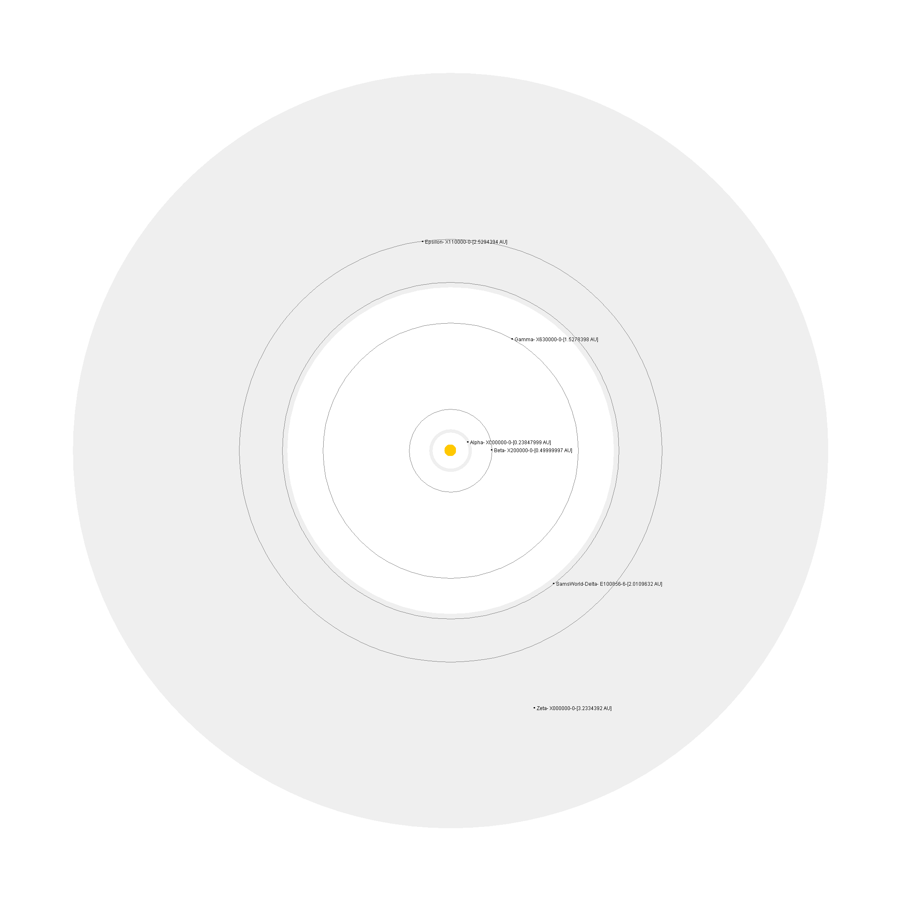
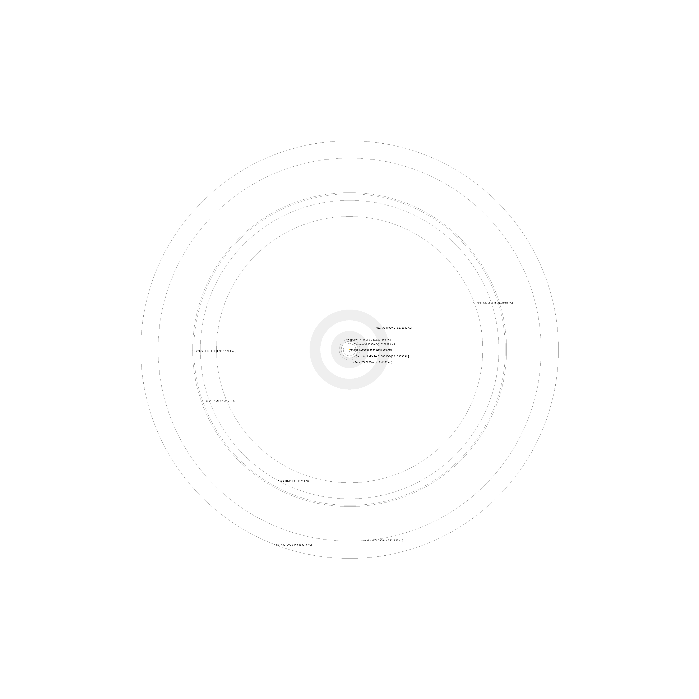
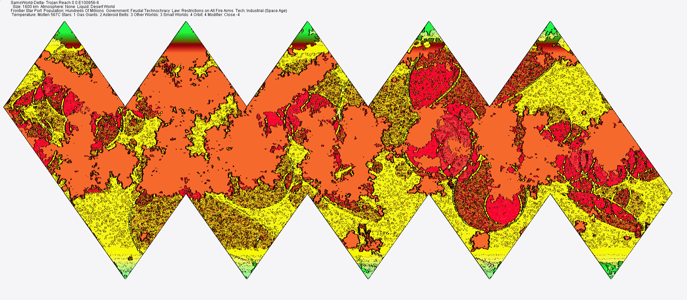

Main Sequence : G1 : 0.30332354 Variable
Stellar Mass 1.03 Sols
Stellar Luminosity 1.02 Sols
Orbits:4
zone 2.0109632AU Delta-
SamsWorld-Delta- Trojan Reach 0 0 E100856-6
Size: 1600 km Atmosphere: None Liquid: Desert World
Frontier Star Port Population: Hundreds Of Millions Government: Feudal Technochracy Law: Restrictions on All Fire Arms Tech: Industrial (Space Age)


Habitable Orbit 2.0109632 AU's
SamsWorld-Delta- Trojan Reach 0 0 E100856-6
Size: 1600 km Atmosphere: None Liquid: Desert World
Frontier Star Port Population: Hundreds Of Millions Government: Feudal Technochracy Law: Restrictions on All Fire Arms Tech: Industrial (Space Age)
Planet Mass 0.001875 earths
Planet Diameter 1920.0 km
Molten Core Density 0.96 earths
Planet Gravity 0.12 G's
Habitable Orbit 2.0109632 AU's
Orbital Eccentricity 0.4403271 Degrees
Orbital Period 2.8098788 Years
Axial Tilt 5.0 Degrees
Rotational Period 20.512192 Hours
Nitrogen Oxygen Mix 0.0 Composition
Liquid Composition Germanium Silocate -2.0 %
Hydrographic Percentage 0.013244561 % Surface Liquid
Rare Synthetic Animals value 4.0

Surface Preasure 0.049999997 Atm's
Energy Factor 1141.1862 K/s
Energy Emission 1.1338934 Earths
Magnetic Field 0.34414423 Earths
Energy Absorption 0.8 Percent
Green House Effect 1.0 Earths
Base Temperature 805.1453 K
Base Temperature 531.8953 C
Day Plus 7.3770065 C
Night Minus 123.07315 C
Axial Tilt Effect 1.5350877 C
Orbital Eccentricity Effect 7.7057242 C
| Latitude 83 Deg -8.75 C |
|---|
| Latitude 76 Deg -6.4657917 C |
| Latitude 69 Deg -4.220667 C |
| Latitude 62 Deg -2.05304 C |
| Latitude 55 Deg -4.440892E-16 C |
| Latitude 48 Deg 1.903325 C |
| Latitude 41 Deg 3.6243687 C |
| Latitude 34 Deg 5.1336837 C |
| Latitude 27 Deg 6.4054446 C |
| Latitude 20 Deg 7.417892 C |
| Latitude 13 Deg 8.153702 C |
| Latitude 6 Deg 8.600286 C |
200000001 beings
Population data code 8
Very Rare Synthetic Luxuries value 4.0
Luxuries value 3.0
Rare Luxuries value 3.0
Synthetic Durables value 4.0
Durables value 7.0
Rare Durables value 4.0
Very Rare Synthetic Durables value 5.0
Very Rare Durables value 4.0
Rare Sofware value 4.0
Very Rare Sofware value 6.0
Natural Recordings value 2.0
Synthetic Recordings value 5.0
Rare Natural Recordings value 3.0
Rare Synthetic Recordings value 6.0
Rare Synthetic Recordings value 6.0
Very Rare Synthetic Recordings value 5.0
Common Holo Recordings value 3.0
Aggresiveness Competitive
Aggresive Action Millitant
Progresiveness Progressive
Progresive Action Enterprising
Extensiveness Harmonious
Extensive Action Freindly
Secretiveness Communicative
Secretive Action Couscous
Customs 5
Unusual Beverages for Religious figures
Dowrey for Higher occupations
Unusual punishment prohibited for Human races
Life marriages for Middle social standing
Regimented leasure/recreation for Male and female adults
High Tech Limit 7
Low Tech Minimum 2
Energy 5
Communications 5
Computers and Robots 5
Medical 5
Personal Military 5
Heavy Military 4
Land Transport 5
Water Transport 2
Air Transport 2
Space Transport 3
Government dataFeudal Technochracy
Government Government of SamsWorld-Delta-aaw Feudal Technochracy
Represented by Common Ruler
Organized by Organized as Bureaucratic Judicial Very Small Council
Divided by 3 Divisions, 3 Parties, 2 Secret Societies and 2 Underground Groups
Other Authorities are Small Council of Controlling Legislative
Major Politics Political data
8 Elections
Ddaie Cultural data 9
Majority Vargr Mutants
Populus Solomani Exiles
Minority Hiver Militants